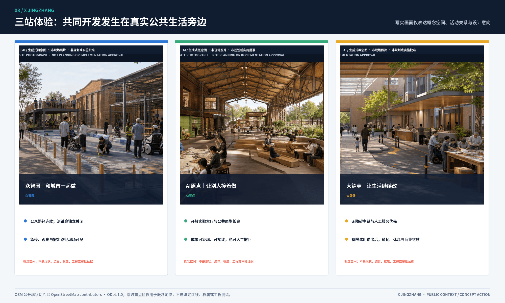

它能否在边界内工作？
一件产品，三次决定，一次 RETURN
0.8在众智园越界失败；0.9复测后在AI原点完成有限发布；大钟寺公众异议触发RETURN；0.10带着新工况回到众智园。

公众走正线，AI走侧线。每次并线，都必须经过城市的公开交叉验证。
0.8在众智园越界失败；0.9复测后在AI原点完成有限发布；大钟寺公众异议触发RETURN；0.10带着新工况回到众智园。
TEST X处理机器路径与公众路权；RELEASE X处理技术公开与公共权利；USE X处理AI服务与日常生活。每个X都能独立关闭，公众正线不随AI停机。
它能否在边界内工作？
它是否有权被有限发布？
城市是否愿意继续使用？

面积、构件、实施强度、投资量级、所需主体、停止条件和保留资产都在城市设计阶段可判断；任何试点失败，都必须给城市留下无障碍、人工服务或公共空间资产。

无障碍主链、普通步行、人工服务、商业、休息和铁路遗产解释不依赖模型、账号或网络。


七段双翼把产业、社区、绿地和铁路遗产串到同一条公共正线；铁路区段、道岔、放行和折返只作为有来源边界的运行文化转译。


关键状态、失败路径、空间拓扑、来源和假设仍提供可重跑机器证据；这里的PASS不代表现场认证、政府审批或实施授权。